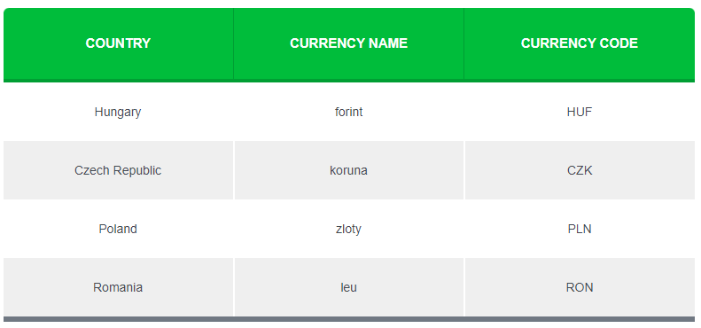

What is forex trading?
Forex trading is the simultaneous buying of one currency and selling of another.
Currencies are traded through a “forex broker” or “CFD provider” and are traded in pairs. Currencies are quoted in relation to another currency.
For example, the euro and the U.S. dollar (EUR/USD) or the British pound and the Japanese yen (GBP/JPY).
When you trade in the forex market, you buy or sell in currency pairs.
Imagine each currency pair constantly in a “tug of war” with each currency on its own side of the rope.
An exchange rate is the relative price of two currencies from two different countries.
Exchange rates fluctuate based on which currency is stronger at the moment.
There are three categories of currency pairs:
The major currency pairs always include the U.S. dollar.
Cross-currency pairs do NOT include the U.S. dollar. Crosses that involve any of the major currencies are also known as ” minors”.
Exotic currency pairs consist of one major currency and one currency from an emerging market (EM).
The currency pairs listed below are considered the “majors.”
These pairs all contain the U.S. dollar (USD) on one side and are the most frequently traded.
While there are EIGHT major currencies, there are only SEVEN major currency pairs.
Compared to the crosses and exotics, the price moves more frequently with the majors, which provides more trading opportunities.
The majors are the most liquid in the world.
Liquidity is used to describe the level of activity in the financial market.
In forex, it’s based on the number of active traders buying and selling a specific currency pair and the volume being traded.
The more frequently traded something is the higher its liquidity.
For example, more people trade the EUR/USD currency pair and at higher volumes than the AUD/USD currency pair.
This means that EUR/USD is more liquid than AUD/USD.
Currency pairs that include any two of the major currencies except the U.S. dollar are known as cross-currency pairs or simply as the “crosses.”
Major crosses are also known as “minors.”
While not as frequently traded as the majors, the crosses are still pretty liquid and still provide plenty of trading opportunities.
Don’t confuse minor currency pairs with the seven major currency pairs, all of which include the U. S. dollar against one of the seven other most liquid currencies in the world.
The most actively traded crosses are derived from the three major non-USD currencies: EUR, JPY, and GBP.

No, exotic pairs are not exotic belly dancers who happen to be twins.
An exotic currency is a currency from countries with developing or emerging markets.
Exotic currency pairs are made up of one major currency paired with the currency of an emerging economy, such as Brazil, Mexico, Chile, Turkey, or Hungary.
Basically, an exotic currency pair includes one major currency alongside an exotic currency.
The chart below contains a few examples of exotic currency pairs.
Wanna take a shot at guessing what those other currency symbols stand for?
Depending on your forex broker, you may see the following exotic currency pairs so it’s good to know what they are.
Keep in mind that these pairs aren’t as heavily traded as the “majors” or “crosses,” so the transaction costs associated with trading these pairs are usually bigger.
It’s not unusual to see spreads that are two or three times bigger than that of EUR/USD or USD/JPY.
Due to the overall lower degree of liquidity, exotic currency pairs tend to be far more sensitive to economic and geopolitical events.
For example, a political scandal or unexpected election results can cause an exotic pair’s exchange rate to swing violently.
So if you want to trade exotics currency pairs, remember to factor this into your decision.
For those of y’all who are really mesmerized by exotics, here’s a more comprehensive list.
Aside from the three main categories of currency pairs, there are other “groups” of currencies that are thrown around in the FX world that you should be aware of.
The G10 currencies are ten of the most heavily traded currencies in the world, which are also ten of the world’s most liquid currencies.
Traders regularly buy and sell them in an open market with minimal impact on their own international exchange rates.
Scandinavia is a subregion in Northern Europe, with strong historical, cultural, and linguistic ties.
The term “Scandinavia” in local usage covers the three kingdoms of Denmark, Norway, and Sweden.
Together, their currencies are known as the “Scandies“.
Back in the day, Denmark and Sweden established the Scandinavian Monetary Union to merge their currencies to a gold standard. Norway joined later.
This meant that these countries now had one currency, with the same monetary value, with the exception that each of these countries minted its own coins.
But then World War I happened, the gold standard was abandoned and the Scandinavian Monetary Union disbanded. These countries decided to keep the currency, even if the values were separate from one another. And this remains the state of things.
If you notice their currency names, they all look similar. That’s because the word “krone or krona” literally means “crown”, and the differences in spelling of the name represent the differences between the North Germanic languages.
Crown currencies. What a cool name huh?
I don’t know about you, but saying “Hook me up with some crowns yo.” sounds way cooler than “Hook me up with some dollahs yo.”
SEK and NOK also have cool nicknames, “Stockie” and “Nokie“.
So when paired with the U.S. dollar, USD/SEK is read “dollar stockie” and USD/NOK is read “dollar nockie”.
“CEE” stands for Central and Eastern Europe.
Central and Eastern Europe is a term encompassing the countries in Central Europe, the Baltics, Eastern Europe, and Southeast Europe (the Balkans), usually meaning former communist states from the Eastern Bloc (Warsaw Pact) in Europe.
Central and Eastern European Countries (CEECs) is an OECD term for the group of countries comprising Albania, Bulgaria, Croatia, the Czech Republic, Hungary, Poland, Romania, the Slovak Republic, Slovenia, and the three Baltic States: Estonia, Latvia, and Lithuania.
Regarding the FX market, there are four main CEE currencies to be aware of.

BRIICS is the acronym coined for the association of six major emerging national economies: Brazil, Russia, India, Indonesia, China, and South Africa.
Originally the first four were grouped as “BRIC” (or “the BRICs”). BRICs was a term created by Goldman Sachs to name today’s new high-growth emerging economies.
BRIICS is the term created by the OECD, when it added Indonesia and South Africa.
At the BRICS Summit held in September, 2023, the BRICS+ countries announced plans to expand the grouping to include new members!
Argentina, Egypt, Ethiopia, Iran, Saudi Arabia and the United Arab Emirates have been invited to join as full members from January 2024.
The new BRICS+ will represent 46 percent of the world population and account for roughly 37 percent of global GDP.
Whew! That was a lot of information on currencies but you just raised your FX IQ points! ðŸ§
Let’s summarize what you’ve learned in a series of questions:
What is a currency pair in forex?
A currency pair is a pairing of currencies where the value of one is relative to the other. For example, GBP/USD is the value of the British pound relative to the U.S. dollar.
What are the major currency pairs?
Major currency pairs (“majors”) are those that include the U.S. dollar and are the most frequently traded. There are seven of them: EUR/USD, USD/JPY, GBP/USD, USD/CAD, USD/CHF, AUD/USD, and NZD/USD.
What are the currency crosses?
Currency crosses (“crosses”) are the more frequently traded currencies that do NOT include the U.S. dollar in their pairing. Crosses include EUR/GBP, EUR/CAD, GBP/JPY, EUR/CHF, EUR/JPY, etc.
How many currency pairs exist?
There are HUNDREDS of currency pairs in existence but not all can be traded in the FX market. The United Nations currently recognizes 180 currencies. If you were to pair each currency up with another, it’s a lot.